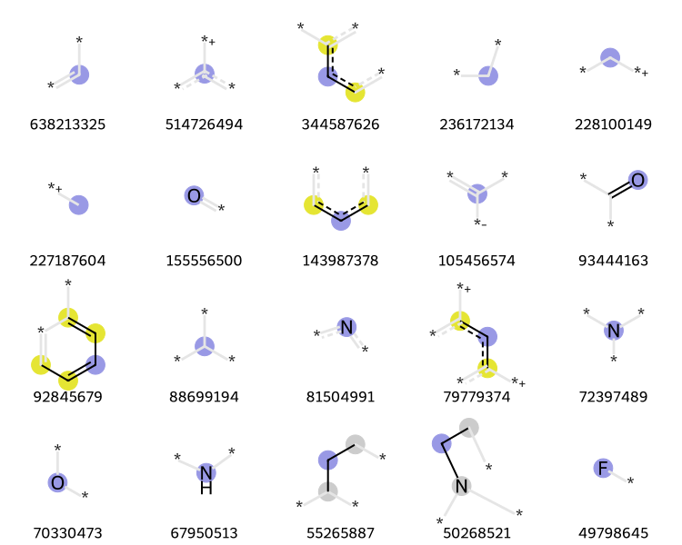
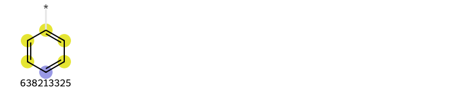
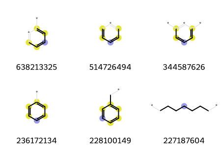

This post is a followup to the recent post looking at the 1000 most common “chemical words” in PubChem Compound. Here we use the same data set but look at how often circular atom environments (expressed via Morgan fingerprint bits) occur across all of the compounds.
The PubChem team has done a much deeper and more thorough analysis of the atom environments in PubChem Compound; it’s definitely worth reading that paper if you are interested in this stuff.
The fps variable contains a Counter keyed by (bit ID, atomic number of central atom, radius). I used this triple instead of just the bit ID to minimize problems with collisions.
list(fps.keys())[0]
(10565946, 8, 1)
The values of the counter object are the number of times the feature occurs in the file:
fps[(10565946, 8, 1)]
3232
To get the full set of counts we need to process each of the pickle files and create one giant dictionary. This takes a while:
import pickle, gzipinfs = glob.glob('/fileserver/pine/pine1/glandrum/pubchem/Compound/Compound*.pkl.gz')all_counts = Counter()for i,fname inenumerate(infs):print(i+1,fname,len(all_counts.keys()))with gzip.open(fname,'rb') as inf: _,fps = pickle.load(inf)for key,val in fps.items(): all_counts[key]+=val
To understand that output: The most common bit, #3218693969, occurs 638213325 times in the dataset. The bit itself is radius zero, centered on a C. The third most common bit, #951226070, is a radius one bit centered on C.
len([x for x in itms if x[0]==1])
42140583
There are >42 million bits that only occur one time, so looking at any of those in detail is probably not particularly informative.
When I looked at the BRICS results, it was easy to look at exactly what the fragments themselves were since we had a SMILES for each fragment. That is not the case here, in order to get more information about a particular bit, we have to actually find molecules that set it and then extract the info from them.
Here’s code to do that:
from rdkit.Chem import rdFingerprintGeneratorfpg = rdFingerprintGenerator.GetMorganGenerator(radius=3)from rdkit import rdBasedef get_fp(m): ao = rdFingerprintGenerator.AdditionalOutput() ao.AllocateBitInfoMap() fp = fpg.GetSparseCountFingerprint(m, additionalOutput=ao)return fp,aodef find_atom_envs_for_bits(bits,fns): needed =list(bits) res = {}for tpl in needed: res[tpl] =None blocker = rdBase.BlockLogs()for fn in fns:with gzip.open(fn, 'rb') as inf: suppl = Chem.ForwardSDMolSupplier(inf)for m in suppl:if m isNoneor m.GetNumHeavyAtoms() >60:continue fp,ao = get_fp(m) imap = ao.GetBitInfoMap()for tpl in needed: bid,anum,rad = tplif bid in imap:for aid, irad in imap[bid]:if irad == rad: ianum = m.GetAtomWithIdx(aid).GetAtomicNum()if ianum == anum: res[tpl] = (m,aid,irad) needed.remove(tpl)breakifnot needed:breakifnot needed:breakreturn res
sdfs = glob.glob('/fileserver/pine/pine1/glandrum/pubchem/Compound/Compound*.sdf.gz')t = find_atom_envs_for_bits([x[1] for x in itms[:20]],sdfs)# make sure the results are in the same order so that our legends are correctassertlist(t.keys())==[x[1] for x in itms[:len(t)]]
And now draw the top 20 environments:
from IPython.display import SVGm,aid,rad =list(t.values())[1]SVG(Draw.DrawMorganEnvs(list(t.values()),molsPerRow=5,legends=[str(x[0]) for x in itms[:len(t)]]))

This is pretty fast for the common bits (since it’s easy to find a matching molecule), but is potentially considerably more time consuming for less common bits.
Those are all radius 0-2, what is the most common radius 3 bit?
for idx,(cnt,(bid,anum,rad)) inenumerate(itms):if rad==3: b3 = bidprint(f'rad=3 rank={idx}, cnt={cnt}, anum={anum}')break
rad=3 rank=40, cnt=21759201, anum=6
t = find_atom_envs_for_bits([itms[idx][1]],sdfs)SVG(Draw.DrawMorganEnvs(list(t.values()),molsPerRow=5,legends=[str(x[0]) for x in itms[:len(t)]]))

What about the top three radius 2 and radius 3 bits?
allidxs = idx2 + idx3t = find_atom_envs_for_bits([itms[idx][1] for idx in allidxs],sdfs)SVG(Draw.DrawMorganEnvs(list(t.values()),molsPerRow=3,legends=[str(x[0]) for x in itms[:len(t)]]))

It’s not terribly surprising that these all involve phenyl rings.
Finding less common bits than these starts to take quite a long time, so I will stop here.